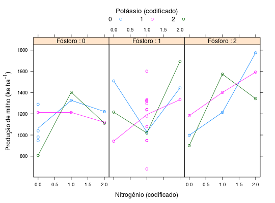

Ensaio de adubação NPK de milho, fatorial de \(3^{3}\), com confundimento de 2 graus de liberdade da interação tripla. A cada três blocos de 9 parcelas juntaram-se mais 5 com tratamentos adicionais combinando calcário e micronutrientes.
Um data.frame com 42 observações e 8 variáveis, em que
bloctratNPKcalcmicroprodPIMENTEL-GOMES (2009), Tabela 18.2.1, pág. 330.
library(lattice) data(PimentelTb18.2.1)#> Warning: data set ‘PimentelTb18.2.1’ not foundstr(PimentelTb18.2.1)#> 'data.frame': 42 obs. of 8 variables: #> $ bloc : Factor w/ 3 levels "1","2","3": 1 1 1 1 1 1 1 1 1 2 ... #> $ trat : Factor w/ 30 levels "111+C+M","111+M",..: 4 9 11 14 16 21 24 26 28 5 ... #> $ N : int 0 0 0 1 1 1 2 2 2 0 ... #> $ P : int 0 1 2 0 1 2 0 1 2 0 ... #> $ K : int 0 2 1 1 0 2 2 1 0 1 ... #> $ calc : int 0 0 0 0 0 0 0 0 0 0 ... #> $ micro: int 0 0 0 0 0 0 0 0 0 0 ... #> $ prod : int 981 1216 1183 1213 1028 1574 1111 1333 1775 1213 ...xtabs(~trat + bloc, data = PimentelTb18.2.1)#> bloc #> trat 1 2 3 #> 111+C+M 1 1 1 #> 111+M 1 1 1 #> 111+C 1 1 1 #> 000 2 1 1 #> 001 0 1 0 #> 002 0 0 1 #> 010 0 1 0 #> 011 0 0 1 #> 012 1 0 0 #> 020 0 0 1 #> 021 1 0 0 #> 022 0 1 0 #> 100 0 0 1 #> 101 1 0 0 #> 102 0 1 0 #> 110 1 0 0 #> 111 1 2 1 #> 112 0 0 1 #> 120 0 1 0 #> 121 0 0 1 #> 122 1 0 0 #> 200 0 1 0 #> 201 0 0 1 #> 202 1 0 0 #> 210 0 0 1 #> 211 1 0 0 #> 212 0 1 0 #> 220 1 0 0 #> 221 0 1 0 #> 222 0 0 1xyplot(prod ~ N | factor(P), groups = K, data = PimentelTb18.2.1, layout = c(NA, 1), type = c("p", "a"), xlab = "Nitrogênio (codificado)", ylab = expression("Produção de milho"~(ka~ha^{-1})), auto.key = list(title = "Potássio (codificado)", cex.title = 1.1, columns = 3), strip = strip.custom(strip.names = TRUE, var.name = "Fósforo"))